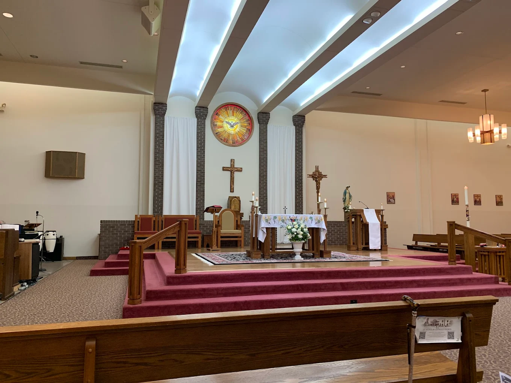
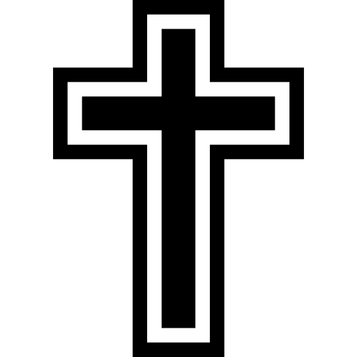

Serving Virginia Beach with devotion since 1975
St. Nicholas Catholic Church is a welcoming parish rooted in the Orthodox faith, dedicated to worship, prayer, and service. We invite all to grow in love and faith through our community.
Our ministries support youth, families, and the greater community through fellowship, compassion, and outreach.
712 Little Neck Road, Virginia Beach, VA 23452